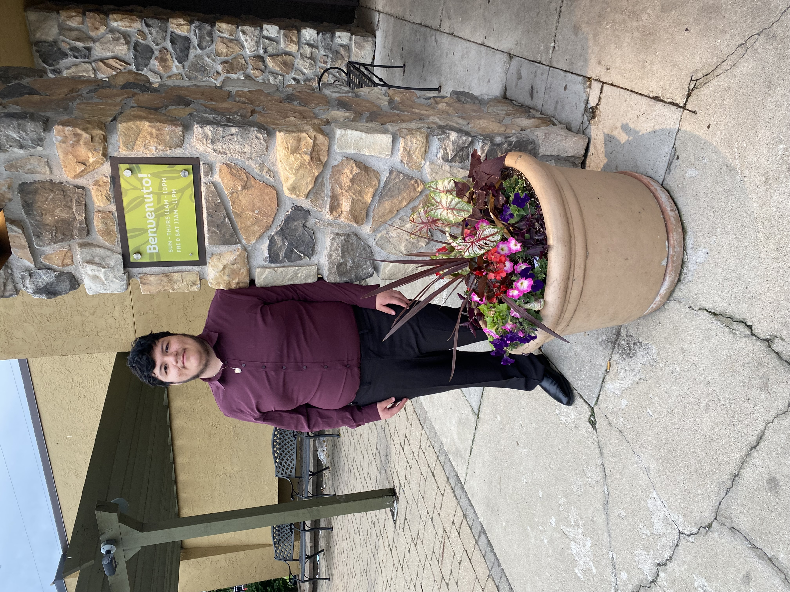

Name: Jonathan Luna
Due Date: 10/6/2026

Email: lunaj3738@gmail.com
Phone: (773) 431-5044
Degree: Bachelor of Science
Major: Information Communication & Data Visualization
Institution: Illinois Institute of Technology
Graduation Date: May 2028
Company: IEEE: RTC Conference and Expo 2026
Position: Volunteer
Duration: 09/2026 – 09/2026
Description: Boosted productivity and aided in the setting up of the event via heavy lifting, sorting name tags alphabetically, and setting up signage and posts around the Expo Hall. Upheld the integrity of the Expo and efficiently assisted attendees and speakers, providing the utmost care and willing to take care of given tasks, all with a friendly smile.
Company: Global Career Accelerator
Position: Student
Duration: 01/2025 – 04/2025
Description: Developed workforce skills such as leadership, organization, communication, teamwork, and problem solving by completing a 14-week leadership and professional development course. Designing a career roadmap by engaging within a 7-step process that requires self-assessment and reflection, as well as role investigation and evaluation to determine the steps required to achieve career goals.
Coding: HTML, CSS, JavaScript, C++, Java
Platforms/Software: Excel, MS Word, Google Docs, Google Slides, Google Drawings, Powerpoint, Microsoft 365, Outlook, Gmail, ChatGPT.
Languages: English, Spanish